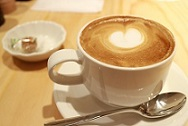

Кофе Капучино
250 мл
Стоимость:
110
руб.
“Капучино – это влюбленность. Сначала терпко, а потом сладко и легко. А на поверку – все та же жизнь”. Узнаете цитату из “Кофейной книги” Макса Фрая? Капучино, действительно, такой. Немного горький, но больше сладкий и мягкий. Не зря этот рецепт кофе по популярности догоняет эспрессо. В статье поделимся интересными фактами о капучино и расскажем, как приготовить его правильно.
Появился капучино в Италии, на родине большинства кофейных напитков. Его отличительная черта – наличие пышной молочной пенки на поверхности чашки. Молоко смягчает вкус кофе, делает его не таким крепким.

Название напитка связано с орденом капуцинов – монахов, носивших рясы красно-коричневого цвета. Почти в каждой статье о капучино вы прочитаете, что у рясы был белый капюшон, напоминающий белую пенку на кофе. Однако капюшон у рясы был коричневым, просто первый рецепт капучино отличался от того, что мы пьем сейчас. Сначала напиток готовили с небольшим добавлением молока. И слегка разбавленный кофе становился похож по цвету на монашеские одеяния.
Позже в кофе начали добавлять молочную пену, которую сначала взбивали вручную. Затем появился первый прообраз капучинатора из двух емкостей. В одной нагревалась вода, во вторую с молоком по трубочкам поступал пар, что приводило к появлению густой пенки. Еще позже изобрели первую кофемашину, молоко стали взбивать её паром.
Традиционно капучино подают в керамической подогретой чашке объемом около 180-200 мл, пенка должна быть на уровне ее края. В Италии кофейную чашку с утолщенными стенками называют тацца.
Капучино подают сразу после приготовления, постоявший напиток расслаивается и теряет вкусовые качества. Его пьют без сахара, достаточно естественной сладости за счет молочных сахаров.
Обратно в меню
Стоимость:
110
руб.